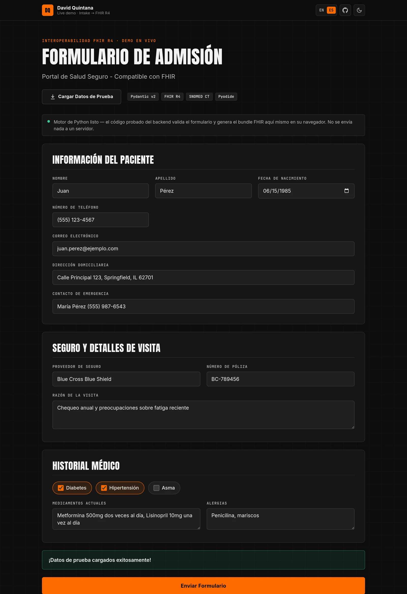
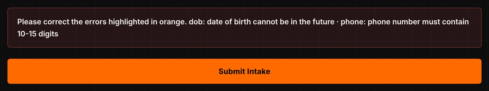
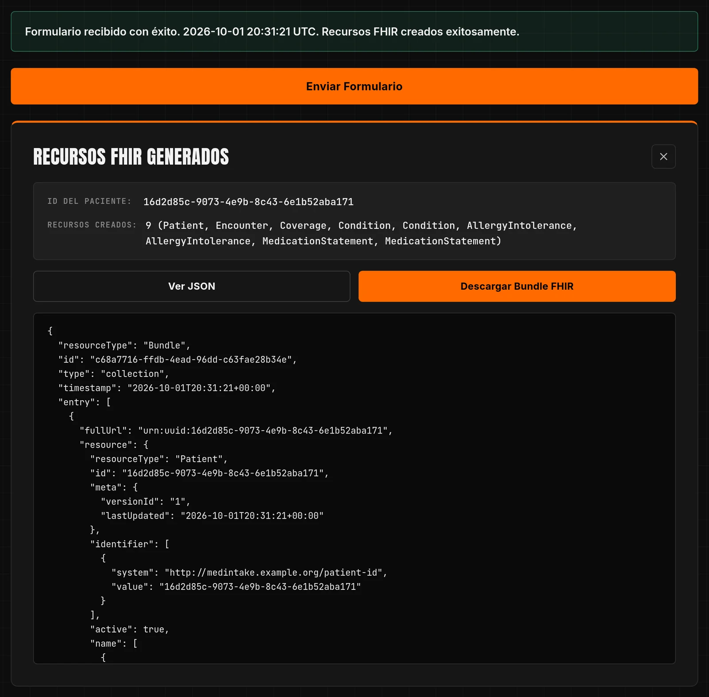

Case study · FHIR R4 interoperability
Caso · Interoperabilidad FHIR R4
Bilingual Patient Intake → FHIR R4
Admisión bilingüe de pacientes → FHIR R4
A bilingual (EN/ES) intake portal whose Python backend validates every submission with Pydantic v2 and turns it into a self-contained FHIR R4 Bundle, ready for an EHR or FHIR server. The live demo runs that same tested backend in your browser.
Un portal de admisión bilingüe (EN/ES) cuyo backend de Python valida cada envío con Pydantic v2 y lo convierte en un Bundle FHIR R4 autocontenido, listo para un EHR o servidor FHIR. La demo ejecuta ese mismo backend probado en su navegador.
The problem
El problema
Manual patient registration introduces transcription errors and language barriers that compromise both care quality and operational flow. Even when intake is digital, the data usually lands as a flat form that someone still has to re-key or map before an EHR can use it.
This prototype captures patient-generated data in the patient's own language and turns it into standard FHIR resources at the source, so the structure, coding, and validation happen once, in code, instead of by hand.
El registro manual de pacientes introduce errores de transcripción y barreras de idioma que afectan la calidad de la atención y el flujo operativo. Incluso cuando la admisión es digital, los datos suelen quedar en un formulario plano que alguien debe volver a capturar o mapear antes de que un EHR pueda usarlos.
Este prototipo captura los datos en el idioma del propio paciente y los convierte en recursos FHIR estándar en el origen, para que la estructura, la codificación y la validación ocurran una sola vez, en código, y no a mano.
How it works
Cómo funciona

Bilingual intake, one click from either language
Admisión bilingüe, a un clic de cualquier idioma
Every label, placeholder, and message switches between English and Spanish instantly, without a reload or losing what the patient typed. The choice is remembered for the next visit.
The form captures demographics, contact and emergency contact, insurance, reason for visit, conditions, medications, and allergies. A Load demo data button fills a realistic profile in either language for demos and testing.
Cada etiqueta, ejemplo y mensaje cambia entre inglés y español al instante, sin recargar ni perder lo que el paciente escribió. La elección se recuerda para la próxima visita.
El formulario captura datos demográficos, contacto y contacto de emergencia, seguro, motivo de la visita, condiciones, medicamentos y alergias. Un botón de datos de prueba llena un perfil realista en cualquiera de los dos idiomas.

Validation at the source
Validación en el origen
Every request goes through a strict IntakeForm Pydantic v2 model before any FHIR is built. Invalid input comes back as a 422 with field-level errors that the form displays.
- Email format, a plausible date of birth (not in the future, not more than 130 years ago), and phone numbers with 10–15 digits
- Conditions limited to the coded list; length limits on every free-text field
- Malformed JSON returns 422 instead of crashing with a 500
- Unexpected errors are logged server-side and never echo submitted data (PHI) back to the browser
Cada solicitud pasa por un modelo IntakeForm estricto de Pydantic v2 antes de construir cualquier recurso FHIR. La entrada inválida regresa como un 422 con errores por campo que el formulario muestra.
- Formato de correo, fecha de nacimiento plausible (no futura, no mayor a 130 años) y teléfonos de 10 a 15 dígitos
- Condiciones limitadas a la lista codificada; límites de longitud en todo texto libre
- Un JSON mal formado devuelve 422 en lugar de fallar con 500
- Los errores inesperados se registran en el servidor y nunca devuelven al navegador los datos enviados (PHI)

A self-contained FHIR R4 Bundle
Un Bundle FHIR R4 autocontenido
The backend maps the validated form to Patient, Encounter, Coverage, Condition, AllergyIntolerance, and MedicationStatement resources and returns them as a collection Bundle.
- Every entry has a
urn:uuidfullUrl, and every reference resolves inside the bundle - Conditions are coded in SNOMED CT (diabetes
73211009, hypertension38341003, asthma195967001) - The preferred language is recorded in
Patient.communication(BCP-47) - Staff can review the JSON or download it before it goes anywhere
El backend mapea el formulario validado a recursos Patient, Encounter, Coverage, Condition, AllergyIntolerance y MedicationStatement y los devuelve en un Bundle de tipo collection.
- Cada entrada tiene un fullUrl
urn:uuidy cada referencia se resuelve dentro del bundle - Las condiciones se codifican en SNOMED CT (diabetes
73211009, hipertensión38341003, asma195967001) - El idioma preferido se registra en
Patient.communication(BCP-47) - El personal puede revisar el JSON o descargarlo antes de enviarlo a cualquier sistema
Engineering decisions
Decisiones de ingeniería
The choices a reviewer would ask about, and why.
Las decisiones que un revisor preguntaría, y por qué.
| DecisionDecisión | WhyPor qué |
|---|---|
Patient-reported conditions and allergies are unconfirmed, asserted by the patientCondiciones y alergias reportadas por el paciente quedan como unconfirmed, afirmadas por el paciente | A self-reported checkbox is not a clinical confirmation; labeling it confirmed would overstate what the record knows.Una casilla marcada por el paciente no es una confirmación clínica; marcarla como confirmed exageraría lo que sabe el registro. |
| No guessed allergy categorySin adivinar la categoría de alergia | "Shellfish" is a food and "penicillin" a medication; the form can't tell them apart, so the optional field is left out rather than filled in wrong."Mariscos" es un alimento y "penicilina" un medicamento; el formulario no puede distinguirlos, así que el campo opcional se omite en lugar de llenarse mal. |
Medications become MedicationStatement resourcesLos medicamentos se vuelven recursos MedicationStatement | The first version collected medications and silently dropped them. They now travel with the bundle.La primera versión recogía los medicamentos y los descartaba sin avisar. Ahora viajan con el bundle. |
| One clock and one ID factory per requestUn reloj y un generador de IDs por solicitud | All resources share a real UTC timestamp, and tests inject a fixed clock and IDs, so output is reproducible.Todos los recursos comparten una marca de tiempo UTC real, y las pruebas inyectan un reloj e IDs fijos para que el resultado sea reproducible. |
| CORS allow-list from configurationLista CORS desde la configuración | Origins come from an environment variable (GitHub Pages and this site by default), so redeploying never needs a code change.Los orígenes vienen de una variable de entorno (GitHub Pages y este sitio por defecto), así que desplegar nunca requiere cambiar código. |
Architecture
Arquitectura
The backend is a small package with one job per module:
schemas.py— ingestion and validation (request/response contracts)fhir_builders.py— pure functions fromIntakeFormto FHIR resourcesterminology.py— SNOMED CT and HL7 code systems in one placeservice.py— the use case, shared by the API and the in-browser demoapi.py— routing, CORS, and error handling only
The live demo loads Pyodide (CPython on WebAssembly) and calls service.submit_json directly, so the form is validated and the FHIR Bundle is built by the tested code without a server, and no data leaves the browser. For a real deployment, the same package runs behind FastAPI in a non-root Docker image on Render, Fly.io, or Railway.
El backend es un paquete pequeño con una responsabilidad por módulo:
schemas.py— ingesta y validación (contratos de entrada y salida)fhir_builders.py— funciones puras deIntakeForma recursos FHIRterminology.py— sistemas de códigos SNOMED CT y HL7 en un solo lugarservice.py— el caso de uso, compartido por la API y la demo en el navegadorapi.py— solo rutas, CORS y manejo de errores
La demo carga Pyodide (CPython en WebAssembly) y llama directamente a service.submit_json, así que el formulario se valida y el Bundle FHIR se genera con el código probado, sin servidor y sin que los datos salgan del navegador. Para un despliegue real, el mismo paquete corre detrás de FastAPI en una imagen Docker sin privilegios en Render, Fly.io o Railway.
# backend/intake/service.py — one use case, two callers (FastAPI and the browser)
def submit(payload, ctx=None) -> tuple[int, dict]:
try:
form = IntakeForm.model_validate(payload) # Pydantic v2 validates first
except ValidationError as exc:
return 422, invalid_response(exc.errors()).model_dump(mode="json")
return 200, build_submission(form, ctx).model_dump(mode="json")
def submit_json(payload_json: str) -> str: # called from JavaScript via Pyodide
status, body = submit(json.loads(payload_json))
return json.dumps({"status": status, "body": body})Quality
Calidad
Tests use mock payloads that mirror the browser's real submissions, including the edge cases a form actually produces.
Las pruebas usan cargas simuladas que reflejan los envíos reales del navegador, incluidos los casos límite que produce un formulario.
Beyond the official FHIR model check, a test enforces the FHIR JSON rule that arrays, objects, and strings are never empty — something the library itself doesn't check.
Además de la verificación con los modelos FHIR oficiales, una prueba aplica la regla de FHIR JSON de que los arreglos, objetos y cadenas nunca están vacíos — algo que la propia librería no revisa.